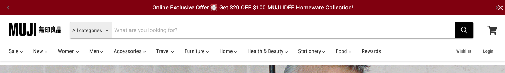
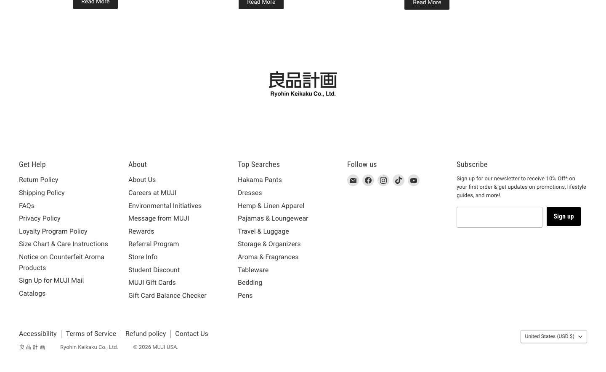
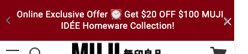
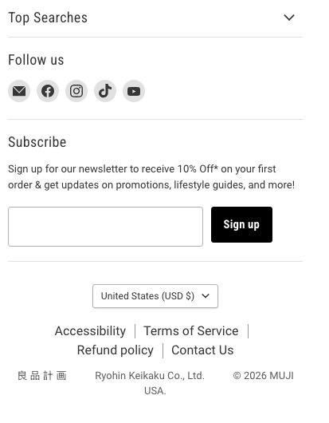

Shell Requirement
Replace the current expressive MUSE shell with a compact retail system: practical promo bar, smaller brand mark, category navigation, search, account/cart actions, and a service footer. This should be implemented once and reused by public routes. Admin routes can share tokens but should use an operational shell variant.
The MUSE name stays. The accent color becomes cedar
#8a3a2d. Avoid copying MUJI red, logos, exact nav copy,
and imagery.
Current Page And MUJI Reference

Differences To Resolve
| Area | Current MUSE | Reference behavior | Required MUSE change |
|---|---|---|---|
| Promo bar | Black band, uppercase, wide tracking, brand slogan energy. | Small campaign strip with strong action color. | Use cedar bar, shorter copy, tighter type, practical offer/service text. |
| Header | Large MUSE logotype and only Shop, Cart, Account. | Dense utility header with search, category selector, cart, account, wishlist. | Build compact header with MUSE mark, search, actions, and category nav. |
| Main wrapper | Generous vertical padding and editorial max-width. | Commerce modules start quickly below nav. | Reduce route padding and let home/catalog hero modules control their own spacing. |
| Footer | Huge black MUSE wordmark and short nav. | Practical link columns, newsletter, social, legal, region selector. | Replace with service footer columns and small MUSE identity only. |
| Typography | Bricolage display, Inter body, large headings, negative tracking. | Neutral/condensed sans, compact body, restrained headings. | Move tokens to Arial/Roboto-like neutral sans and condensed headings. |
| Admin | Admin uses public shell and footer context. | No direct public reference; use same restraint but denser. | Create admin shell variant with operational nav and no marketing footer dominance. |
Component Requirements With Crops

StoreHeader
Compact public header with MUSE mark, search, cart, account, and secondary actions.
- Already have
RootComponent,navLinks,AuthStatus- Get rid
- Large sticky brand header and sparse three-link nav.
- Need
- Search box, category dropdown, cart icon/link, wishlist placeholder.
PromoBar + CategoryNav
One slim campaign bar and one dense category row below the search header.
- Already have
- Current ticker copy in
__root.tsx. - Get rid
- Wide letter spacing and manifesto-like copy.
- Need
- Category link data, active states, mobile collapse.

StoreFooter
Service footer with help links, about links, top searches, follow/social, newsletter, legal.
- Already have
SiteFooterand footer nav links.- Get rid
- Oversized black footer and huge MUSE wordmark.
- Need
- Footer link groups, newsletter form, small legal/region row.

MobileStoreHeader
Small mobile header with menu, search, centered brand, cart, and compact breadcrumb handoff.
- Already have
- Responsive nav wraps but no mobile-specific shell.
- Get rid
- Header wrapping into multiple rows on narrow screens.
- Need
- Menu button, mobile search entry, simple account/cart actions.

MobileFooterAccordion
Mobile footer groups collapse into simple accordions, with newsletter and legal below.
- Already have
- Single footer component.
- Get rid
- Huge footer wordmark on mobile.
- Need
- Accordion behavior and link group data.

AdminShell
Operational shell that shares MUSE tokens but uses dense module tabs, tables, and controls.
- Already have
AdminModulePage,adminModules.- Get rid
- Admin reliance on public marketing footer dominance.
- Need
- Admin header, module nav, KPI row, dense content width.
Implementation Plan
1. Tokens
Update src/styles/app.css colors, fonts, heading scale, links, buttons, forms, borders, and focus states.
2. Shell Components
Extract PromoBar, StoreHeader, CategoryNav, and StoreFooter so __root.tsx stays small.
3. Admin Variant
Keep admin routes focused by adding shared admin shell/components instead of enlarging every route.tsx.